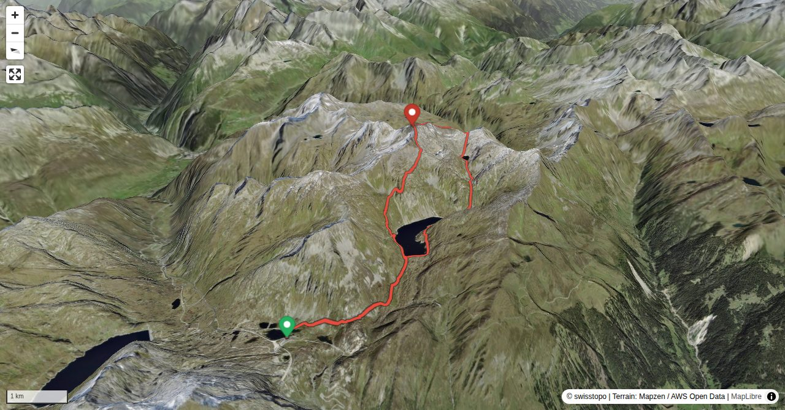

Once upon a time Gotthard was considered the highest peak of the Alps. What would then be the highest peak above Gotthard, Pizzo Centrale? The question could make you ponder, but let’s drop the subject. From the many routes leading to Pizzo Centrale we have selected a rather unusual one, which also rewards mixed groups: those who take it easy leave Val Prevat to the ambitious, and at the summit the two groups meet to enjoy the view and undertake the descent together.
Rather a target for collectors than pleasure seekers. From Rotstocklücke follow the steep rubbly ridge (T4, round trip 30 min.).
Quick Facts
| Summit elevation | 2991 m |
|---|---|
| Difficulty | SAC T5 Demanding alpine hiking with exposure, scrambling, and route-finding. Guide |
| Trailhead | Gotthard Hospiz / Passhöhe |
| Region | Northern Alps |
| Canton | Uri |
| Distance | 13.4 km (loop) |
| Total ascent | ~949 m |
| Elevation range | 2086-2991 m |
| Route sources | SAC Route Portal |
Photos


All photos: SAC Route Portal
Planning
i
i
sac_scale (precise T1–T6) with
swissTLM3D Wanderwegart
fallback where OSM is silent (coarser T2/T3 and T4+ buckets).
Coverage: OSM 18.4% · swisstopo 47.4% · unknown 33.2%.Elevations computed from the inlined GPX track (SwissTopo height API).
Loading forecast…
Start: Gotthard Hospiz / Passhöhe (2091 m)
Route returns to Gotthard Hospiz / Passhöhe.
3D Terrain View

Route Details
Traverse from east to south-west
- Passo del San Gottardo – Pizzo Centrale 3 h 45 Min.
- Pizzo Centrale – Passo del San Gottardo 2 h.
Terrain & safety
The ascent through Val Prevat is pathless, but not really difficult (T3+). The subsequent long ridge has a few scrambling and two difficult passages: one on the descent from P. 2897 (T5–) and one on the descent from the eastern summit (P. 2986) of Pizzo Centrale (T5). All these key passages can be done with a short climbing rope and some runners, if necessary. The descent from the main summit to Gotthardpass is around grade T3. If the ascent to Rotstocklücke is still snow-covered, an ice-axe (or even crampons) can be helpful.
Source: SAC Route Portal
Field Reference
| Trailhead | Gotthard Hospiz / Passhöhe | 46.55550, 8.56690 |
|---|---|---|
| Summit | Pizzo Centrale (2991 m) | 46.57814, 8.61494 |
Coordinates are WGS84 decimal degrees (lat, lon). Emergency: 112 (general) or 1414 (Rega air rescue). Page URL: